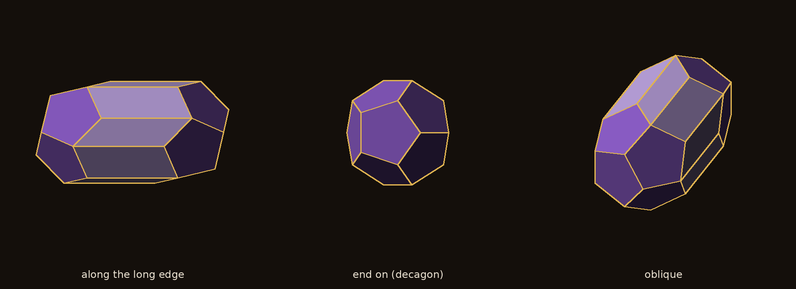
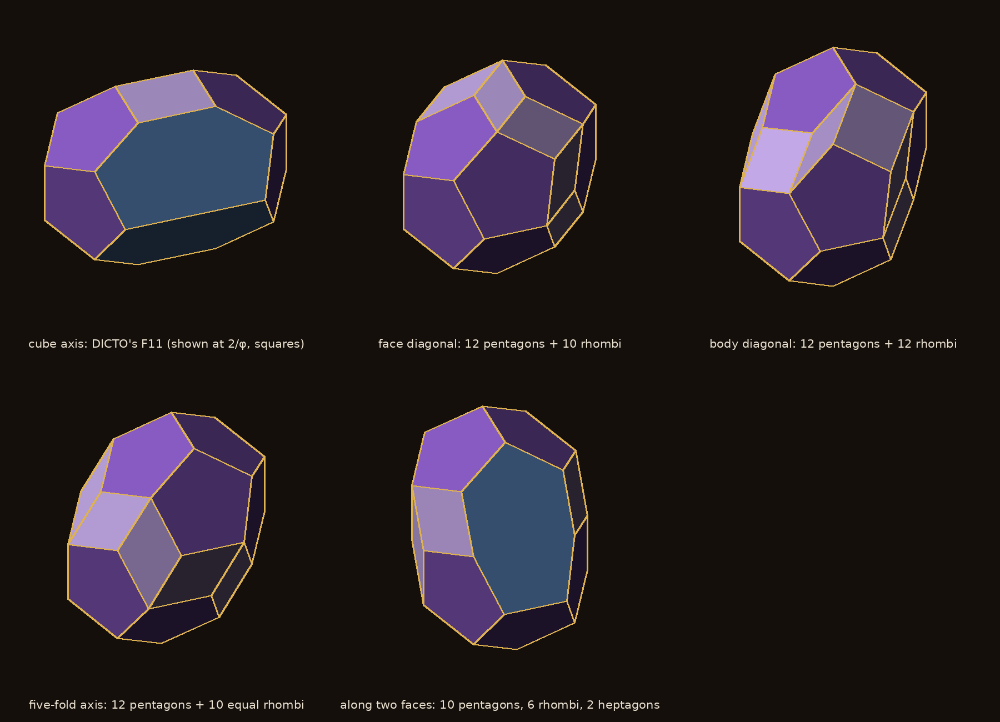
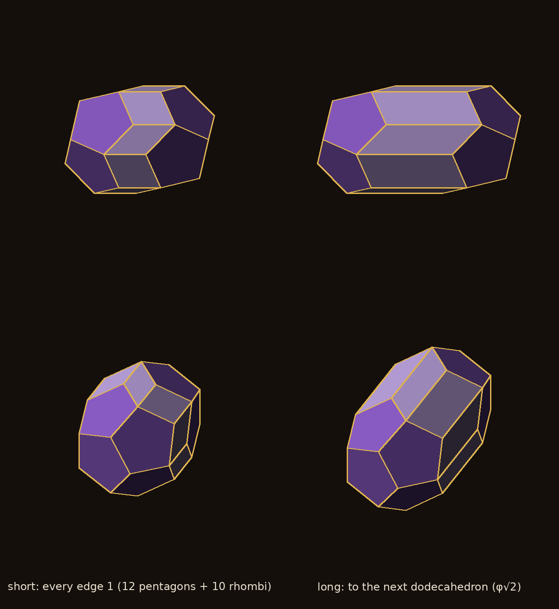
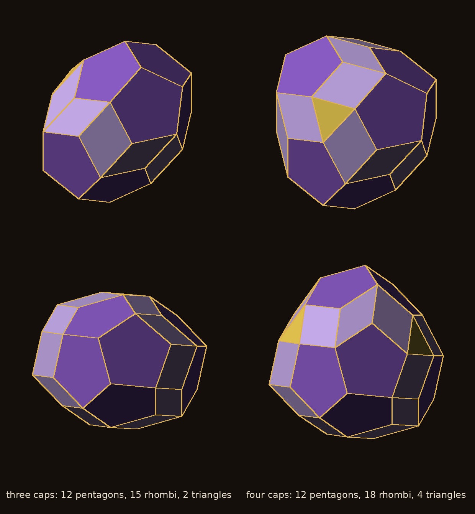
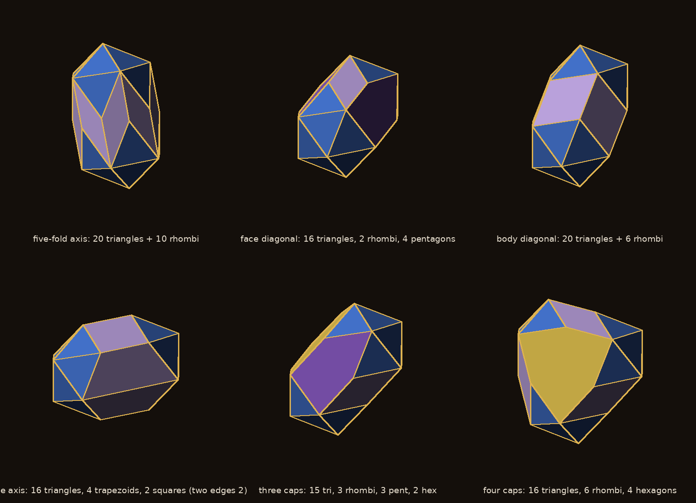
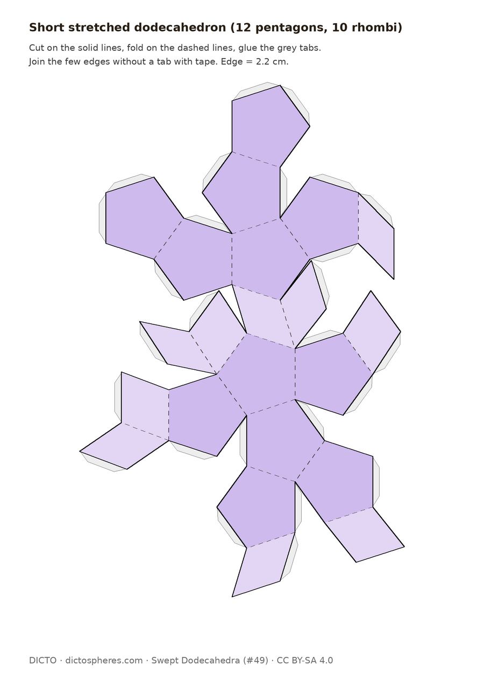
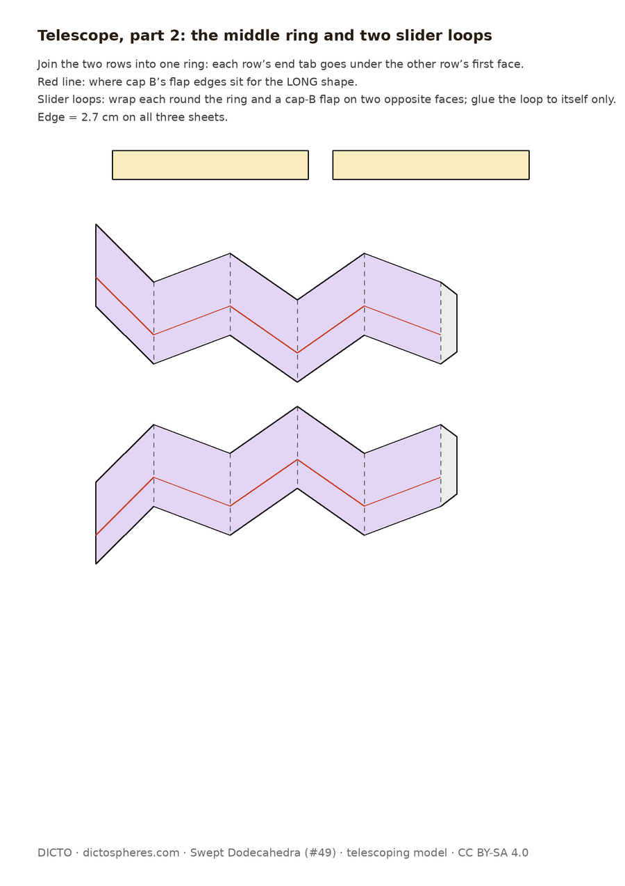

Stretch a dodecahedron one edge-length in any direction and every edge stays the same length: DICTO's stretched dodecahedra, three and four caps, and paper models to build them

DICTO looked at a block of dodecahedra and saw a void, a long six-sided space, with two dodecahedra overlapping it on either side. Taken together, the void and the two overlaps became a stretched dodecahedron.
In the dodecahedron layer of #47 [1], dodecahedra sit on every other cube of a cubic lattice. Looking into the block, DICTO saw a void, a long hexagon in outline, with two dodecahedra overlapping it on either side, and proposed a dodecahedron variant to fit it. The void and the two overlaps, taken together, make one solid: the space a dodecahedron passes through when it slides from one of the two to the other, along the face diagonal of the cube it is built on (Euclid's cube [2]). DICTO had found a first member of this family earlier, also from overlapped dodecahedra: the stretched dodecahedron, the same slide along a cube axis (F11 [3]).
However you slide it, as long as you do not slide it along one of its own edges, every edge of the shape it sweeps comes out one edge-length long.
The proof is short and is given in Appendix A. In 2 000 random directions the belt always had 10 or 12 rhombi, and every edge was 1 (Appendix B).
Some directions are special: they line up with the dodecahedron's own symmetry, and give the cleanest shapes.

| Slide along | Faces | Every edge 1? |
|---|---|---|
| a cube axis (DICTO's F11) | 8 pentagons, 4 hexagons, 2 rectangles (squares at slide 2/φ) | no: the slide runs along two edges |
| a face diagonal of Euclid's cube | 12 pentagons, 10 rhombi | yes |
| a body diagonal (three-fold axis) | 12 pentagons, 12 rhombi | yes |
| a five-fold axis | 10 pentagons, 6 rhombi, 2 heptagons | yes |
DICTO names the whole family the DICTO stretched solids: equal-edged at a stretch of one edge, telescoped at any other length. The faces stay the same; only the belt grows.

For any slide length the faces keep their kinds; only the belt's long sides change. That is why the telescoping model of §7 works: it is one solid at every length.
Instead of sliding along a line, put a dodecahedron at each corner of a triangle or a tetrahedron and wrap them together. Equilateral triangles appear.

Corollary. Wrapping dodecahedra placed at the corners of an equilateral triangle or a regular tetrahedron of side 1, in the positions of neighbouring cubes of Euclid's lattice, gives solids with every edge 1: three caps, 12 pentagons, 15 rhombi and 2 equilateral triangles (29 faces); four caps, 12 pentagons, 18 rhombi and 4 equilateral triangles (34 faces). (The same argument as the theorem: every edge is an edge of the dodecahedron or of the triangle or tetrahedron.)
DICTO also speculated that turning one end of the two-cap shape might make its belt into triangles, as in an antiprism. It cannot: over every turn and shift, the best band of triangles still has edges a third of an edge too long or short, because the rim zigzags. Three and four caps give the triangles instead.
The theorem works for every solid whose edges are all equal. Stretch the other Platonic solids and some famous shapes appear, and some new-looking ones.
The proof in Appendix A uses only that every edge of the solid has the same length, so the Stretching Theorem holds for the tetrahedron, cube, octahedron and icosahedron too (checked for 1 000 random stretches of each). Several results are well-known solids, which is a good sign that the stretch is a natural operation: the tetrahedron with four caps is the cuboctahedron and the octahedron with four caps the truncated tetrahedron (both Archimedean); the tetrahedron stretched through a corner is the elongated triangular pyramid, with three caps the triangular cupola, and the octahedron stretched through a corner the elongated square bipyramid (Johnson solids J7, J3 and J15); the stretched cube is a box, a slanted prism or a zonohedron.

| Icosahedron | Faces |
|---|---|
| stretched along a five-fold axis | 20 triangles, 10 rhombi |
| stretched along a face diagonal | 16 triangles, 2 rhombi, 4 pentagons (pairs of triangles stretched into pentagons) |
| stretched along a body diagonal | 20 triangles, 6 rhombi |
| stretched along a cube axis | 16 triangles, 4 rhombi, 2 squares |
| three caps | 15 triangles, 3 rhombi, 3 pentagons, 2 hexagons |
| four caps | 16 triangles, 6 rhombi, 4 hexagons |
The icosahedron family is the richest. None of its six shapes is a Johnson or Archimedean solid (they have rhombi), and none was found in the sources checked; the nearest relatives are Hart and Zongker's sum of the compound of five tetrahedra, with 20 triangles and 60 rhombi [6], and Ed Baumann's equal-edged near-misses, which also merge triangles into rhombi [8]. The octahedron stretched through a face (8 triangles, 6 rhombi) and the tetrahedron and cube in their other directions are also not among the named solids we checked; a short table of the Archimedean solids is left for later.
Print, cut, fold and glue: every solid here can be held in the hand.


Two files are attached. swept-dodecahedra-nets.pdf: five A4 nets, the short and long stretched dodecahedra, the three- and four-cap forms and DICTO's F11 (square version), with fold lines dashed, cut lines solid and glue tabs; the few edges without a tab are joined with tape. swept-dodecahedron-telescope.pdf: DICTO's telescoping model in three parts, a cap with inner flaps, a loose middle ring of ten belt faces, and a cap with outer flaps. The faces slide over and under each other; two slider loops keep them in line. Pushed together it is the short shape; pulled to the red marks it is the long one; it extends to about 2.7 edges.
The method is old; these shapes were not found named anywhere we looked.
Sliding a solid along a line, or adding two solids corner by corner, is a standard construction (the Minkowski sum); how a face behaves when the slide lies in its plane, and how a belt forms around the outline, are known in general [4, 5]. George Hart's sums of tetrahedra build triangle-and-rhombus solids the same way, without pentagons [6]; the convex solids glued from regular pentagons alone are listed in [7]. In the sources checked (the reference library and web searches on 22 October 2026) we did not find the dodecahedron swept along a face diagonal, the body diagonal or a five-fold axis, nor the three- and four-cap forms, named or described. Since the construction is simple, they may exist somewhere unnamed; we present them as DICTO's family on that understanding.
One idea, sliding a dodecahedron, gives a whole family of solids with equal edges, and you can build them.
The theorem shows why the DICTO stretched solids keep their edges equal: every edge is either an old edge or a copy of the slide. The face-diagonal slide keeps all twelve pentagons, and three and four caps add equilateral triangles. The same theorem holds for every Platonic solid: it rediscovers the cuboctahedron, the truncated tetrahedron and three Johnson solids, and gives a family of new-looking stretched icosahedra. The Archimedean solids are left for later.
The swept shape is the Minkowski sum D ⊕ S of D and the segment S from 0 to u. Every face of a Minkowski sum is the sum of a face of each summand, taken in a common outward direction n [4]. For S, the face in direction n is its end u if n·u > 0, its start 0 if n·u < 0, and S itself if n·u = 0. Hence: a face f of D with normal n, n·u ≠ 0, appears as a translate of f; a face with n·u = 0 appears as f ⊕ S, a pentagon widened by u, which has 6 sides if u is parallel to one of its edges and 7 otherwise; an edge e of D on the outline seen along u (between a face with n·u > 0 and one with n·u < 0) appears as the parallelogram e ⊕ S. The edges of D ⊕ S are therefore translates of edges of D (length 1) and translates of S (length |u| = 1), except where an edge of D is parallel to u: there e ⊕ S is a single segment of length 2. So every edge has length 1 exactly when no edge of D is parallel to u. ∎ The corollary is the same argument with S replaced by the triangle or tetrahedron, whose edges have length 1 and are not parallel to edges of D in the positions used.
In studies/2026-10-22-swept-dodecahedra: sweep_theorem.py (2 000 random directions, all equilateral; belts of 10 or 12 rhombi; the four special directions); caps34.py (three and four caps: face kinds, edge lengths); gyro_caps.py (turned caps: no triangle belt, worst edge off by 0.336 at best); ring1.py and identify.py (the other four Platonic solids: 1 000 random stretches each, special directions, caps, and which results are known solids); icosa_family.py (Figure 5); nets.py and telescope.py (the printable nets: unfoldings checked to lie flat with no faces overlapping). Python 3 with numpy and scipy.